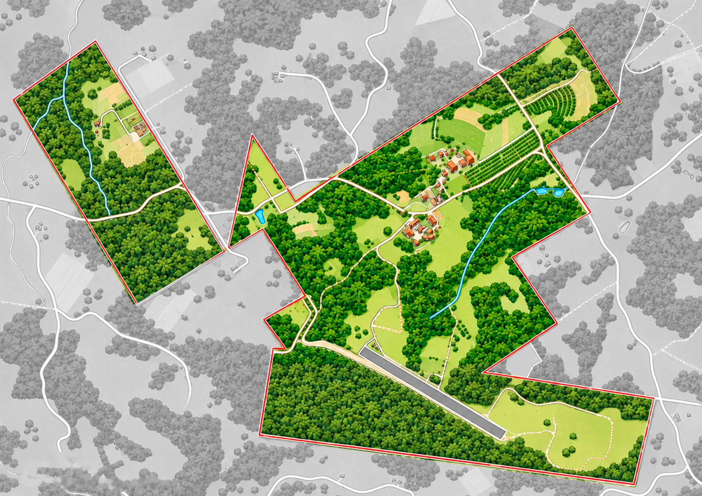
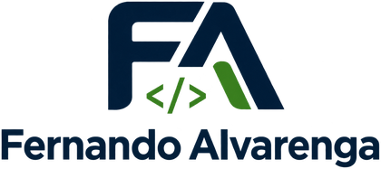

Jornada Tranqueras Abiertas
EEA Cerro Azul · Ruta Nac. 14, km 836
Jueves 19 de noviembre

Desarrollado por Fernando AlvarengaINTA Cerro Azul
EEA Cerro Azul · Ruta Nac. 14, km 836


Jornada Tranqueras Abiertas
EEA Cerro Azul · Ruta Nac. 14, km 836
Jueves 19 de noviembre

Desarrollado por Fernando Alvarenga